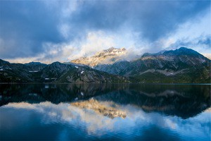
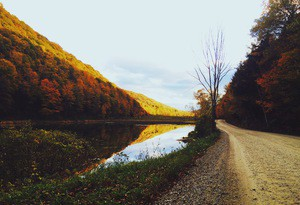
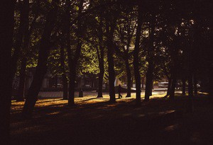
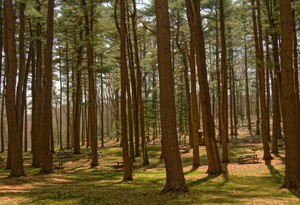

Neverland is a fictional place featured in the works of J. M. Barrie and those based on them. It is the dwelling place of Peter Pan, Tinker Bell, the Lost Boys and others. Although not all people in Neverland cease to age.

FarmVille is a farming simulation social network game developed by Zynga in 2009. It is similar to Happy Farm, Farm Town, and video games such as the Harvest Moon series. Its gameplay involves various aspects of farm management.
The Rocky Mountains, commonly known as the Rockies, are a major mountain range in western North America. The Rocky Mountains stretch more than 3,000 miles (4,830 km) from the northernmost part of British Columbia, in western Canada.

A Forest is a large area of land covered with trees or other woody vegetation. Hundreds of more precise definitions of forest are used throughout the world, incorporating factors such as tree density, tree height, and land use.

Forests where a majority of the trees lose their foliage at the end of the typical growing season are called deciduous forests. These forests are found in many areas worldwide and have distinctive ecosystems, and understory growth.